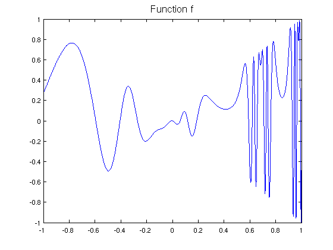
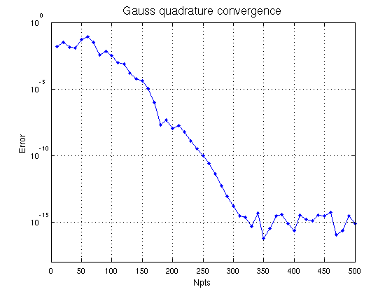
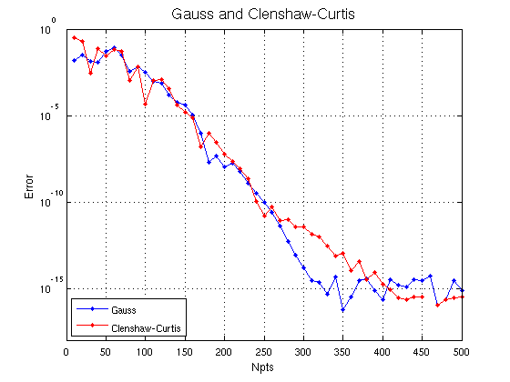

Gauss and Clenshaw-Curtis quadrature
Nick Trefethen, September 2010
(Chebfun example quad/GaussClenCurt.m)
Suppose you have a function f on an interval:
x = chebfun('x'); f = @(x) x.*sin(2*exp(2*sin(2*exp(2*x)))); fc = chebfun(f); LW = 'linewidth'; FS = 'fontsize'; MS = 'markersize'; figure, plot(fc,LW,1.2) title('Function f',FS,16)
In Chebfun you would normally compute the integral like this:
format long
Ichebfun = sum(fc)
Ichebfun = 0.336732834781727
Chebfun's method is Clenshaw-Curtis quadrature, i.e., the integration of the polynomial representing f by interpolation or piecewise interpolation in Chebyshev points. Here is the number of quadrature points:
Npts = length(fc)
Npts = 651
If we wanted, we could also perform the integration by explicitly extracting the Clenshaw-Curtis nodes and weights, like this:
[s,w] = chebpts(Npts); Iclenshawcurtis = w*f(s)
Iclenshawcurtis = 0.336732834781728
Or we could try Gauss quadrature with the same number of points and weights.
[s,w] = legpts(Npts); Igauss = w*f(s)
Igauss = 0.336732834781725
Though this value of Npts is in the hundreds, Chebfun can handle values in the millions without difficulty. This is achieved by the algorithm of Glaser, Liu and Rokhlin [1] as implemented by Nick Hale. See Examples quad/GaussQuad.m.
Let's take a look at the accuracy as a function of Npts. Gauss quadrature converges geometrically, since f is analytic:
figure, tic, err = []; NN = 10:10:500; for Npts = NN [s,w] = legpts(Npts); Igauss = w*f(s); err = [err abs(Igauss-Ichebfun)]; end semilogy(NN,err,'.-',LW,1,MS,16), grid on ylim([1e-18 1]) xlabel('Npts',FS,12), ylabel('Error',FS,12) title('Gauss quadrature convergence',FS,16), toc
Elapsed time is 0.566076 seconds.
Let's add another curve to the plot for Clenshaw-Curtis:
hold on, tic, err = []; for Npts = NN [s,w] = chebpts(Npts); Iclenshawcurtis = w*f(s); err = [err abs(Iclenshawcurtis-Ichebfun)]; end semilogy(NN,err,'.-r',LW,1,MS,16) title('Gauss and Clenshaw-Curtis',FS,16) legend('Gauss','Clenshaw-Curtis','location','southwest'), toc
Elapsed time is 0.506196 seconds.
Clenshaw-Curtis quadrature also converges geometrically for analytic functions. In some circumstances Gauss converges up to twice as fast as C-C, with respect to Npts, but as this example suggests, the two formulas are often closer than that. The computer time is often faster with C-C. For details of the cmoparison, see [2] and Chapter 19 of [3].
References:
[1] A. Glaser, X. Liu and V. Rokhlin, A fast algorithm for the calculation of the roots of special functions, SIAM J. Sci. Comp. 29 (2007), 1420-1438.
[2] L. N. Trefethen, Is Gauss quadrature better than Clenshaw-Curtis?, SIAM Review 50 (2008), 67-87.
[3] L. N. Trefethen, Approximation Theory and Approximation Practice, draft textbook available at http://www.maths.ox.ac.uk/chebfun/ATAP.